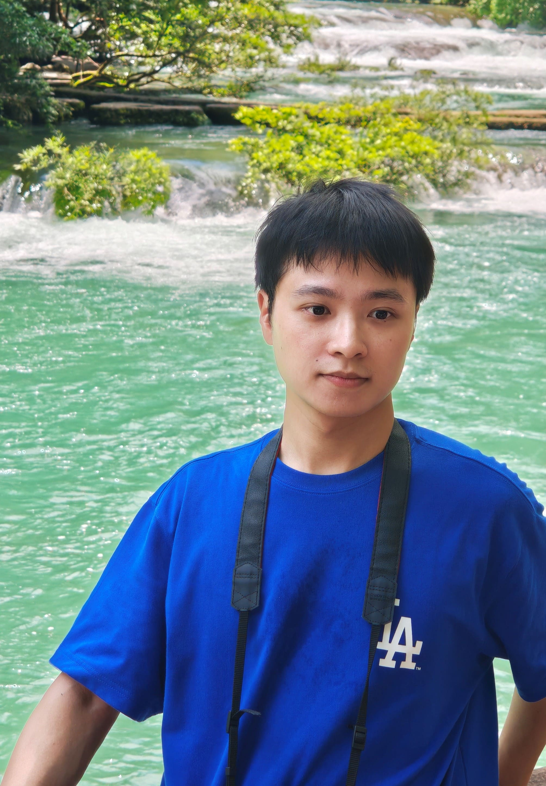

袁启民 (Qimin Yuan)
电话：13870998901
邮箱：qmyuan@zju.edu.cn
地址：浙江省杭州市西湖区余杭塘路866号
Biography
-
🎓
教育背景：
浙江大学｜硕博连读五年级，集成电路学院，电子信息专业
南昌大学｜学士学位，通信工程专业，保研至浙江大学
-
🔬
研究方向：
数字集成电路系统SoC设计，多芯粒系统（Multi-Chiplet System）架构与硬件安全。
-
📝
科研成果：
在IEEE ICCAD 、EI2等期刊会议发表论文2篇，其中以第一作者发表论文1篇。1项研究成果TIFS在投。
参与国家重点项目两项：SmartGrid-National Science and Technology Major Project（2025ZD0804005）和 Program of Beijing Huairou Laboratory（ZD2023021A）
Publications
- Quantitative Cost Model and Cost Optimization Methods for Multi-Technology-Node Architecture
Qimin Yuan, Kai Huang, Xiaowen Jiang, Dongliang Xiong, International Conference on Computer-Aided Design (ICCAD), 2025
- A RISC-V System-on-Chip Based on Dual-core Isolation for Smart Grid Security
Chen Chen, Qimin Yuan, Xiaowen Jiang, Kai Huang, Peng Li, Wei Xi, IEEE 6th Conference on Energy Internet and Energy System Integration (EI2), 2022
Patents
- CN120163100A 一种多芯粒系统成本量化分析与优化方法，实审中，2025
- CN117251890A 一种基于主动屏蔽层的安全芯片防护装置及方法，实审中，2023
Project
▶ 2020年10月-2024年05月，朔天科技有限公司数字芯片研发实习
在朔天科技有限公司的数字芯片研发实习期间，任职芯片设计前端岗位，参与5项流片SoC设计与验证项目。
-
集成气体传感器的专用SoC项目，NEXCHIP110nm流片，2023
作为项目负责人带领团队完成项目，负责架构设计（总线架构与时钟复位架构），时钟复位管理模块RCC设计，以及ADC Controller设计。
-
防御侵入式探针物理攻击的主动防护层电路设计，FIB测试防护层，2023
设计了哈密顿回路CM算法生成主动屏蔽层，该屏蔽层布线具有隐蔽性和高随机性。结合所设计入侵检测硬件模块以抵抗芯片FIB攻击，成功检测FIB注入测试并增加切割难度。主动防护层电路装置与算法申请发明专利一项。
-
Kunpeng7测试芯片，SIMC40nm流片，2022
负责项目整体集成与架构修改工作，提出NVMC测试方案并进行前仿与门仿。
-
打印机耗材芯片，FPGA bit流仿真，2022
负责CortexM0内核集成与SoC架构集成，验证外设APB IP(Timer,WDT,UART,I2C,GPIO)仿真。
-
Kunpeng9测试芯片，HUALI55nm流片，2022
负责仿真环境搭建与SoC集成，该项目集成了Cortex-M3内核。完成NVMC仿真验证并进行代码覆盖率分析。
-
基于开源E902处理器构建双核TEE系统设计，2021
基于TEE安全架构原型，提出一个内存逻辑隔离保护的安全子系统架构，支持安全核能进行通用加解密，签名验签操作保障双核系统安全启动流程。
-
BAIHU嵌入式SoC芯片设计，SMIC55nm流片，2021
作为项目负责人带领团队完成项目，该项目中学习仿真环境与SoC设计开发流程，负责SoC集成与DC综合分析。仿真方面负责Testbench仿真环境搭建，NVMC与CLKGEN功能验证，门级仿真与FPGA调试。学习Spec, Testplan, UG文档规范编写。
▶ 2024年06月-2025年09月，浙江大学超大规模电路实验室（ZVS-lab）进行多芯粒Chiplet系统技术的研究
在浙江大学的超大规模电路实验室进行多芯粒系统技术的研究，包括成本模型与安全中介层Chiplet等方向。
-
多芯粒系统成本评估模型研发，2024
研发多芯粒系统的成本评估模型，分析系统切分粒度、工艺节点选择、与封装类型各复杂参数，寻找最优的成本方案。成果于2025年发表在EDA四大顶会之一的ICCAD国际会议。
-
有源中介层Active Interposer项目，SMIC55nm工艺流片，2025
设计安全有源中介层架构与防御机制，从启动阶段到运行阶段抵御软硬件攻击。并构建了由4个MCU Chiplet与Secure Interposer构成的原型系统，其中MCU与Interposer均采用SMIC55nm工艺流片，最后系统封装采用2.5D堆叠封装。
Honors and Awards
- 浙江省专业学位优秀实践成果奖——《国产打印机芯片安全防护技术研发》, 2024
- 思瑞浦奖学金，2024
- 歌山奖学金，2023，2022
- 五好研究生，2023
- 优秀研究生，2024，2023，2022
- 第五届中国研究生创“芯”大赛平头哥专项奖二等奖，2022